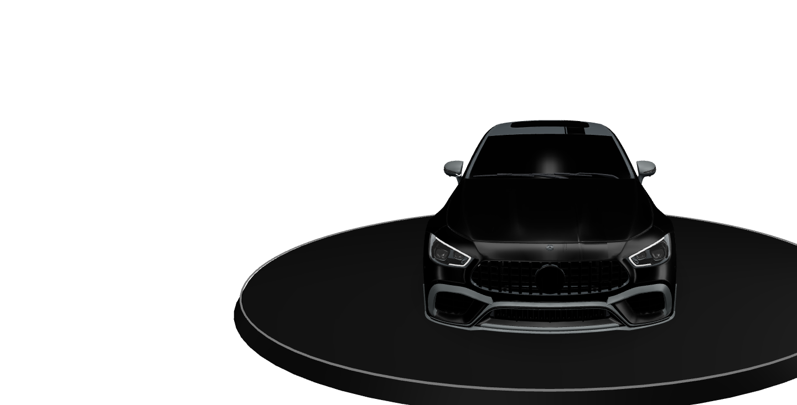

Диагностика
Осматриваем автомобиль, фиксируем состояние и ограничения.
МАТЕРИАЛ. СВЕТ. ХАРАКТЕР.
Вращайте. Сравнивайте. Выбирайте.

Потяните, чтобы вращать · колесо — масштаб
TI DETAILING / КОСТАНАЙ
Профессиональный уход, восстановление и модернизация автомобиля. Примерьте цвет и отделку в 3D, затем выберите работы под вашу задачу.
Обсудить автомобиль ↗28 УСЛУГ ТИ
КАК ПРОХОДИТ РАБОТА
Осматриваем автомобиль, фиксируем состояние и ограничения.
Согласовываем технологию, материалы и ожидаемый результат.
Выполняем этапы по выбранному технологическому процессу.
Проверяем результат при рабочем свете перед выдачей.
МАТЕРИАЛЫ И ПОДХОД
Учитываем состояние покрытия, толщину лака и конструкцию деталей. Технологию и объём работ согласовываем после осмотра.
TI DETAILING KOSTANAY
Костанай, ул. Рудненская, 13Б
Реальные примеры работ по вашей задаче отправим по запросу. Изображения в 3D-студии — иллюстрации, не портфолио клиентских машин.